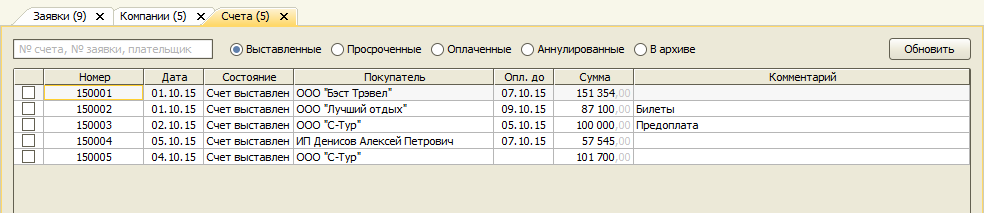
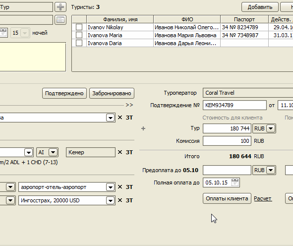
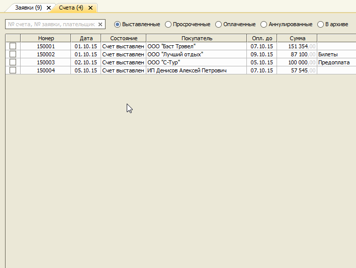

Счета
Главное меню → Документы → Счета
- Создание счета
- Регистрация оплаты
- Автоматическая регистрация оплаты
- Шаблоны печатных форм
- Настройка нумерации
- Экспорт счета в 1С
Программа позволяет выставлять счета клиентам (как организациям, так и физическим лицам), контролировать сроки оплат, регистрировать платежи.

Создание счета
Для оформления и печати счета введите сумму оплаты на форме "Оплаты клиентов" и нажмите кнопку "Счет". Откроется форма счета с реквизитами для оплаты.

Регистрация оплаты
При поступлении оплаты на расчетный счет можно отметить этот факт в соответствующем Счете. Будет автоматически создан документ "Поступление на р/с", а сам счет переведен в состояние Оплачен.

Автоматическая регистрация оплаты
При импорте банковской выписки программа автоматически ищет номер счета в Назначении платежа операции и отмечает счет как оплаченный.
Шаблоны печатных форм
С помощью формы Шаблоны на вкладке Счета могут быть добавлены произвольные формы счетов для печати. Для использования в шаблоне доступны следующие теги:
- Номер
- Дата
- Менеджер
Информация о фирме:
- Фирма
- Директор
- ГлавныйБухгалтер
- Менеджер
- Город
- Адрес
- Телефон
- ЮрАдрес
- ИНН
- КПП
- ОГРН
- ИнформацияОПлательщике
- Банк
- БИК
- РасчетныйСчет
- КоррСчет
Информация из заявки:
- Заявка.Номер
- Заявка.Дата
- Заявка.НачалоТура
- Заявка.КонецТура
- Заявка.ПервыйТурист
- Заявка.КоличествоТуристов
- Заявка.Страны
Информация о плательщике-юрлице:
- Покупатель
- Покупатель.ЮрАдрес
- Покупатель.ИНН
- Покупатель.КПП
- Покупатель.ОГРН
- Покупатель.Банк
- Покупатель.БИК
- Покупатель.РасчетныйСчет
- Покупатель.КоррСчет
- Покупатель.Телефон
- Покупатель.Email
- Покупатель.НомерДоговора
- Покупатель.ДатаДоговора
Информация о плательщике-физ.лице:
- Покупатель
- Покупатель.Адрес
- Покупатель.ФизЛицо
- Покупатель.Банк
- Покупатель.БИК
- Покупатель.РасчетныйСчет
- Покупатель.КоррСчет
- Покупатель.Телефон
- Покупатель.Email
- Паспорт.Номер
- Паспорт.ДатаВыдачи
- Паспорт.КемВыдан
- Паспорт.КодПодразделения
Суммы:
- Итого
- Скидка
- ИтогоБезСкидки
- ОплатитьДо
Таблица Услуги:
- Наименование
- Количество
- Цена
- Сумма
Настройка нумерации
Правило нумерации счетов может быть настроено с помощью формы "Нумерация документов". Для использования в качестве компонента номера доступны только "Дата документа" и "Счетчик". По умолчанию, номер формируется из двух последних цифр текущего года и четырех цифр счетчика.
Экспорт счета в 1С
При нажатии кнопки "Экспортировать" создается файл с данными счета в формате 1С EnterpriseData версии 1.4. Далее этот файл можно импортировать в 1С с помощью обработки.
Форма настройки экспорта вызывается из контекстного меню кнопки Экспортировать нажатием правой клавиши мыши над этой кнопкой.
Остались вопросы? Напишите нам на e-mail